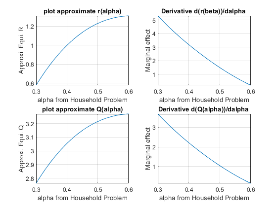

Chapter 7 Matrix Applications
7.1 Cobb Douglas Profit Maximization
Go back to fan’s CodeDynaAsset Package, Matlab Code Examples Repository (bookdown site), or Math for Econ with Matlab Repository (bookdown site).
In the example here, we will solve a firm optimization problem using a system of linear equations (2 equations and 2 unknowns). The solution method is the same for N inputs with Cobb-Douglas Production Function.
7.1.1 Firm and Capital and Labor
Assume that the firm can choose capital and labor inputs. At the start of a period, a firm rents capital inputs and combines capital with labor to produce. At the end of the period, the firm sells its output and pays interest rates based on how much capital it rented, and also pays wage. Total wage bill is \(L\cdot w\), interest payment is \(K\cdot r\) (Here we assume that there is no depreciation of capital, so firm can repay principle by returning capital and just pay interest rate). Profit is denoted by \(\pi\), period interest rate is \(r\), the price of output is \(p\), the firm makes \(y\) units of output, and the production function is Cobb-Douglas: \(A\cdot K^{\alpha } \cdot L^{\beta }\)
The profit maximization problem is:
- \(\displaystyle \max_{K,L} \left(p\cdot A\cdot K^{\alpha } \cdot L^{\beta } -r\cdot K-w\cdot L\right)\)
To find optimal choices, we will assume that \(\alpha +\beta <1\)
7.1.2 Two First Order Conditions
\(\displaystyle \frac{\partial \Pi }{\partial K}=\alpha \cdot p\cdot A\cdot K^{\alpha -1} \cdot L^{\beta } -r\)
\(\displaystyle \frac{\partial \Pi }{\partial L}=\beta \cdot p\cdot A\cdot K^{\alpha } \cdot L^{\beta -1} -w\)
Components of profit first oder conditions: \(MPL\) and \(MPK\) are always both positive, but they are decreasing with higher \(L\) and higher \(K\) respectively. On the other hand, the marginal cost of capital and labor are fixed.
\(\displaystyle \textrm{MPK}=\alpha \cdot A\cdot K^{\alpha -1} \cdot L^{\beta }\)
\(\displaystyle \textrm{MPL}=\beta \cdot A\cdot K^{\alpha } \cdot L^{\beta -1}\)
\(\displaystyle {\textrm{MC}}_K =r\)
\(\displaystyle {\textrm{MC}}_L =w\)
7.1.3 Log Linearizing Optimality Conditions
To find optimal choices, set the first order conditions you obtained above to be equal to zero.
\(\displaystyle \alpha \cdot p\cdot A\cdot K^{\alpha -1} \cdot L^{\beta } =r\)
\(\displaystyle \beta \cdot p\cdot A\cdot K^{\alpha } \cdot L^{\beta -1} =w\)
A generic system of 2 linear equations and 2 unknowns:
- \(\displaystyle \left\lbrack \begin{array}{cc} a & b\\ d & e \end{array}\right\rbrack \cdot \left\lbrack \begin{array}{c} x_1 \\ x_2 \end{array}\right\rbrack =\left\lbrack \begin{array}{cc} a\cdot x_1 +b\cdot x_2 \\ d\cdot x_1 +e\cdot x_2 \end{array}\right\rbrack =\left\lbrack \begin{array}{c} o\\ p \end{array}\right\rbrack\)
Take log of the first order conditions (log linearize), and the two equations above become (Now we can solve for optimal choices using linsolve. Note that log linearizing works regardless of how many terms there are in the cobb-douglas production function):
- \(\displaystyle \left\lbrack \begin{array}{cc} (\alpha -1) & \beta \\ \alpha & (\beta -1) \end{array}\right\rbrack \cdot \left\lbrack \begin{array}{c} \log (K)\\ \log (L) \end{array}\right\rbrack =\left\lbrack \begin{array}{cc} (\alpha -1)\cdot \log (K)+\beta \cdot \log (L)\\ \alpha \cdot \log (K)+(\beta -1)\cdot \log (L) \end{array}\right\rbrack =\left\lbrack \begin{array}{c} \log \left(\frac{r}{\alpha pA}\right)\\ \log \left(\frac{w}{\beta pA}\right) \end{array}\right\rbrack\)
We can by hand solve by elementary row operation (linsolve).
7.1.4 Solving Linear System to find Optimal Choices
The solution to the problem, with parameter values filled in could be obtained like this:
clear all
% Parameters
w = 1;
r = 1.05;
p = 5;
alpha = 0.3;
beta = 0.5;
A = 1.0;
%% Matrix Form of linear system
B = [log(r/(p*A*alpha)); log(w/(p*A*beta))];
A = [(alpha-1), beta;alpha, beta-1];
%% Solve linear equations, and then exponentiate
linSolu = exp(linsolve(A, B));
%% Solution was for log(K*) and log(L*), exponentiate to get K* and L*
KOpti = linSolu(1)
KOpti = 24.1049
LOpti = linSolu(2)
LOpti = 42.18357.1.5 Relative Choices
For Cobb-Douglas production functions, how do optimal capital and labor choices relate to each other?
syms w r p alpha beta A
% Matrix Form of linear system, same as before
B = [log(r/(p*A*alpha)); log(w/(p*A*beta))];
A = [(alpha-1), beta;alpha, beta-1];
% Solve linear equations, and then exponentiate, same as before
% We can use the simplify command to simplify this solution, get rid of exp and log:
linSolu = simplify(exp(linsolve(A, B)))linSolu = \(\displaystyle \left(\begin{array}{c} {\mathrm{e}}^{\frac{\log \left(\frac{r}{A\,\alpha \,p}\right)-\beta \,\log \left(\frac{r}{A\,\alpha \,p}\right)+\beta \,\log \left(\frac{w}{A\,\beta \,p}\right)}{\alpha +\beta -1}} \\ {\mathrm{e}}^{\frac{\log \left(\frac{w}{A\,\beta \,p}\right)+\alpha \,\log \left(\frac{r}{A\,\alpha \,p}\right)-\alpha \,\log \left(\frac{w}{A\,\beta \,p}\right)}{\alpha +\beta -1}} \end{array}\right)\)
KOpti = linSolu(1)KOpti = \(\displaystyle {\mathrm{e}}^{\frac{\log \left(\frac{r}{A\,\alpha \,p}\right)-\beta \,\log \left(\frac{r}{A\,\alpha \,p}\right)+\beta \,\log \left(\frac{w}{A\,\beta \,p}\right)}{\alpha +\beta -1}}\)
LOpti = linSolu(2)LOpti = \(\displaystyle {\mathrm{e}}^{\frac{\log \left(\frac{w}{A\,\beta \,p}\right)+\alpha \,\log \left(\frac{r}{A\,\alpha \,p}\right)-\alpha \,\log \left(\frac{w}{A\,\beta \,p}\right)}{\alpha +\beta -1}}\)
KOpti/LOptians = \(\displaystyle {\mathrm{e}}^{\frac{\log \left(\frac{r}{A\,\alpha \,p}\right)-\beta \,\log \left(\frac{r}{A\,\alpha \,p}\right)+\beta \,\log \left(\frac{w}{A\,\beta \,p}\right)}{\alpha +\beta -1}} \,{\mathrm{e}}^{-\frac{\log \left(\frac{w}{A\,\beta \,p}\right)+\alpha \,\log \left(\frac{r}{A\,\alpha \,p}\right)-\alpha \,\log \left(\frac{w}{A\,\beta \,p}\right)}{\alpha +\beta -1}}\)
The expressions from Matlab look a little convoluted, but you will notice a lot of similar terms inside the equation. If you try to simplify things a little bit, you will end up with a simple fraction below, which says the ratio of optimal capital to labor choices is not related to \(A\) and \(p\), but determined by the elasticity parameters \(\alpha\) and \(\beta\) as well as prices \(w\) and \(r\). If wage increases, you will increase the relative demand of capital vs labor. Similarly, if \(\alpha\) is higher (each unit of capital is more productive), you will have higher relative demand for capital vs labor as well.
- \(\displaystyle \frac{K^* (r,w,A,\alpha ,\beta ,p)}{L^* (r,w,A,\alpha ,\beta ,p)}=\frac{w}{r}\cdot \frac{\alpha }{\beta }\)
7.1.6 Choices as a Function of \(w\) and \(r\)
How do we solve for demand for capital and labor as a function of prices? We can use the code above, except replace numerical values of \(r\) and \(w\) with symbols. And we can easily derive demand elasticities of prices (which are constant for cobb-douglas production functions)
p = 5;
alpha = 0.3;
beta = 0.5;
A = 1.0;
syms w r
% Matrix Form of linear system, same as before
B = [log(r/(p*A*alpha)); log(w/(p*A*beta))];
A = [(alpha-1), beta;alpha, beta-1];
% Solve linear equations, and then exponentiate, same as before
% We can use the simplify command to simplify this solution, get rid of exp and log:
linSolu = simplify(exp(linsolve(A, B)));
% The solution we get here is in terms of fractions, let's write them out:
KOpti = linSolu(1)KOpti = \(\displaystyle \frac{225\,\sqrt{15}}{32\,r^{5/2} \,w^{5/2} }\)
LOpti = linSolu(2)LOpti = \(\displaystyle \frac{375\,\sqrt{15}}{32\,r^{3/2} \,w^{7/2} }\)
7.1.7 Own and Cross Price Elasticity
The price of labor and capital both impact the demand for labor as well as for capital.
The elasticity of capital demand with respect to interest rate is the own price elasticity of demand, and the elasticity of demand for capital with respect to wage is the cross price elasticity of demand. Similarly the elasticity of labor demand with respect to wage is the own price elasticity of demand, and the elasticity of labor demand with respect to interest rate is the cross price elasticity of demand.
- If the own and cross price elastcities are in the same direction, then the two inputs are complements.
That is the case here as shown below. This means that with Cobb-Douglas production function labor and capital are complements. When the price of labor, wage increases, the demand for both labor and capital will decrease. If they were substitutes, when labor price increases, capital demand would increase.
Note that the elasticities below are not a function of anything, just a constant. This is a feature of Cobb-Douglas production function, which has constant demand elasticities of demand of inputs with respect to prices (also constant elasticity of output with respect to inputs). This means that capital and labor are always completements.
Note also that earlier on this page, we showed that with changes in prices, relative choice for capital and labor will shift, that does not contradict the fact that they are complements. In another word, as wage increases, firms demand both less capital and less labor, but the effect is greater on labor, leading to higher share of optimal capital choice.
% Elasticity of KOpti with respect to prices?
elasKoptiW = simplify((diff(KOpti, w)*w)/KOpti)elasKoptiW = \(\displaystyle -\frac{5}{2}\)
% elasKoptiW = -5/2 for alpha = 0.3 and A = 1.0
elasKoptiR = simplify((diff(KOpti, r)*r)/KOpti)elasKoptiR = \(\displaystyle -\frac{5}{2}\)
% elasKoptiR = -5/2 for alpha = 0.3 and A = 1.0
elasLoptiW = simplify((diff(LOpti, w)*w)/LOpti)elasLoptiW = \(\displaystyle -\frac{7}{2}\)
% elasLoptiW = -7/2 for alpha = 0.3 and A = 1.0
elasLoptiR = simplify((diff(LOpti, r)*r)/LOpti)elasLoptiR = \(\displaystyle -\frac{3}{2}\)
% elasLoptiR = -3/2 for alpha = 0.3 and A = 1.07.1.8 Graphical Results for Optimal Choices
We can visualize the optimal choices with these codes below using mesh plot and contour plot
% Number of grid points (points along x and y axis)
grid_points = 100;
% Cobb Douglas Utility
alpha = 0.30;
beta = 0.5;
% Budget
p0 = 5; % p0 is price of output
p1 = 1.05; % p1 is r
p2 = 1; % p2 is wage
maxX1 = 50; % this is max domain of capital to plot
maxX2 = 80; % this is max domain of labor to plot
% This generates a vector between 0 and 10 with grid_points number of points
x1 = linspace(0,maxX1,grid_points);
% This generates another vector between 0 and 10 with grid_points number of points
x2 = linspace(0,maxX2,grid_points);
% This creates all possible combinations of the x1 and x2 vectors, fills up the grid
[x1mesh, x2mesh] = meshgrid(x1,x2);
% Evaluate the utility function at all x1 and x2 combination points
PI = p0*(x1mesh.^alpha).*(x2mesh.^beta) - p1.*x1mesh - p2.*x2mesh;
% Graph "hi35ll" using mesh
close all;
figure();
mesh(x1mesh,x2mesh,PI);
% Labeling
xlabel('Capital');
ylabel('Labor');
zlabel('Cobb Douglas Firm Profit');
title('Profit Function for Labor and Capital Choices')%% To see the results more easily, contour plot
figure();
hold on;
% contour plot, 100 is how many contour lines
contour = contourf(x1mesh, x2mesh, PI, 100);
clabel(contour);
% Labeling
xlabel('Capital');
ylabel('Labor');
zlabel('Cobb Douglas Firm Profit');
title('Profit Function for Labor and Capital Choices')7.2 Cobb Douglas Utility Maximization
Go back to fan’s CodeDynaAsset Package, Matlab Code Examples Repository (bookdown site), or Math for Econ with Matlab Repository (bookdown site).
7.2.1 A Model with Two Goods
A consumer, with preference \(U(x_1 ,x_2 )\) and \(M\) dollars, chooses between two goods, \(x_1\) and \(x_2\), that cost \(p_1\) and \(p_2\) per unit of good.
Below, we will draw the utility surface, budget set, and indifference curves.
7.2.2 Model Parameters
% Number of grid points (points along x and y axis)
grid_points = 100;
% Cobb Douglas Utility
alpha = 0.5;
beta = 1-alpha;
% Budget
M = 100;
p1 = 15;
p2 = 10;
maxX1 = M/p1;
maxX2 = M/p2;7.2.3 Preference
Consumers have preference over the two goods, and \(U(x_1 ,x_2 )\) represents the utility assigned to the goods bundle \((x_1 ,x_2 )\)
If households enjoy both goods as complements, we could use this Cobb-Douglas form with Constant Return to Scale to represent the utility function:
\[U(x_1 ,x_2 )=x_1^{\alpha } \cdot x_2^{1-\alpha }\]
We can use matlab to graph the utility function as a "hill":
% This generates a vector between 0 and 10 with grid_points number of points
x1 = linspace(0,maxX1,grid_points);
% This generates another vector between 0 and 10 with grid_points number of points
x2 = linspace(0,maxX2,grid_points);
% This creates all possible combinations of the x1 and x2 vectors, fills up the grid
[x1mesh, x2mesh] = meshgrid(x1,x2);
% Evaluate the utility function at all x1 and x2 combination points
U = (x1mesh.^alpha).*(x2mesh.^beta);
% Graph "hill" using mesh
close all;
figure();
mesh(x1mesh,x2mesh,U);
% Labeling
xlabel('good 1');
ylabel('good 2');
zlabel('Cobb Douglas Utility');
title('Utility Function Along Two Goods Dimensions')7.2.4 Budget
The budget (choice) set facing the household could be written as:
\[B=\lbrace (x_1 ,x_2 ):x_1 \ge 0,x_2 \ge 0,p_1 x_1 +p_2 x_2 \le M\rbrace\]
where \(M\) is the total resource available for the household.
We can plot out the budget set graphically:
% Same as before, generating grid, and creating all possible combinations using meshgrid
x1 = linspace(0,maxX1,grid_points);
x2 = linspace(0,maxX2,grid_points);
[x1mesh_cost, x2mesh_cost] = meshgrid(x1,x2);
% Evaluate the cost of bundles of goods
bundle_cost = x1mesh_cost*p1 + x2mesh_cost*p2;
% Graph
figure();
contour = contourf(x1mesh_cost, x2mesh_cost, bundle_cost, 10);
clabel(contour);
% Labeling
xlabel('good 1');
ylabel('good 2');
zlabel('Cost');
title('Contour Plot of Budget Set over two goods')7.2.5 Budget and Preference: Indifference Curves
Budget and Utility together. Use contour plot for utility. These are the altitude graphs you have seen in your geography classes. Rather than graphing out the "hill" as earlier, we can represent the heights of the hill with contours, the show where the "hill" is higher and lower.
figure();
% Contour plot, the fourth parameter are at what utility values we want to see the contour lines.
% All consumption bundle along the same contour line gives the same utility, hence they are: Indifference Curves.
contour_u = contourf(x1mesh, x2mesh, U, [0.1, 0.6, 1.1, 2.1,3.1,4.1,5,1,6.1,7.1,8.1,9.1,20,30,40,50,60,70,80,90,100]);
clabel(contour_u);
% Labeling
colormap('white')
xlabel('good 1');
ylabel('good 2');
zlabel('Cobb Douglas Utility');
title('Utility Function Along Two Goods Dimensions and Budget')
% Budget Line
% From 0 to max x1 given budget and p1
x1_M = linspace(0, M/p1, grid_points);
% Given x1 bought, what are the X2s
x2_M = (M-x1_M*p1)/p2;
hold on;
plot(x1_M, x2_M, 'LineWidth', 3);7.3 Equilibrium Interest Rate
Go back to fan’s CodeDynaAsset Package, Matlab Code Examples Repository (bookdown site), or Math for Econ with Matlab Repository (bookdown site).
We derived demand and supply for credit here: Demand and Supply Derivation and Graphs.
We rewrite here the supply curve for credit which is a function of interest rate \(r\):
- \(\displaystyle \textrm{Supply}(R)=Q_s =a-\frac{b}{(1+r)}\)
We can also rewrite the demand curve for credit which is a function of interest rate \(r\):
- \(\displaystyle \textrm{Demand}(r)=Q_d =\frac{h}{r^k }\)
At equilibrium, demand equals to supply, shown graphically as the intersection point in Demand and Supply Derivation and Graphs.
We can solve for equilibrium by trying out a vector of interest rate points, or using nonlinear solution methods.
Alternatively, although this is not a system of linear equations, we can approximate these equations using first order taylor approximation, then they become a system of linear equations. We can then using linsolve to find approximate equilibrium \(Q\) and \(r\).
7.3.1 First Order Taylor Approximation
Here, we discussed the formula for First Order Taylor Approximation: Definition of Differentials. Using the formula we have from there:
- \(\displaystyle f(x)\approx f(a)+f^{\prime } (a)\cdot (x-a)\)
We approximate the demand and Supply curves. Now \(x\) is the interest rate, \(f(x)\) is the demand or supply at interest rate \(x\) we are interested in. \(a\) is the interest rate level where we solve for actual demand or supply. We approximate the \(f(x)\) by using information from \(f(a)\).
For the problem here, let us approximate around \(a=r_0 =1\), this is 100 percent interest rate.
Note the demand and supply curves are monotonic, and they are somewhat linear for segments of \(r\) values. If they are not monotonically increasing or decreasing, we should not use taylor approximation.
7.3.2 Approximate the Supply
The Supply equation comes from Optimal Savings Choice in a 2 period Model with initial Wealth, applying the formula above with \(a=r_0 =1\):
clear all
syms a b r
% Supply equation
S = a - b/(1+r);
% For Approximation, need to get the derivative with respect to R
SDiffR = diff(S, r)SDiffR = \(\displaystyle \frac{b}{{{\left(r+1\right)}}^2 }\)
% Now evaluate S at r = 1 and evaluate S'(r) also at r = 1
SatRis1 = subs(S, r, 1)SatRis1 = \(\displaystyle a-\frac{b}{2}\)
SDiffRris1 = subs(SDiffR, r, 1)SDiffRris1 = \(\displaystyle \frac{b}{4}\)
% We now have an equation that approximates supply
SupplyApproximate = SatRis1 + SDiffRris1*(r-1)SupplyApproximate = \(\displaystyle a-\frac{b}{2}+\frac{b\,{\left(r-1\right)}}{4}\)
7.3.3 Approximate the Demand
The Demand equation comes from Optimal Borrowing Choice Firm Maximization, Applying the formula above with \(a=r_0 =1\):
clear all
syms h k r
% Supply equation
D = h/r^k;
% For Approximation, need to get the derivative with respect to R
DDiffR = diff(D, r)DDiffR = \(\displaystyle -\frac{h\,k}{r^{k+1} }\)
% Now evaluate D at r = 1 and evaluate D'(r) also at r = 1
DatRis1 = subs(D, r, 1)DatRis1 = \(\displaystyle h\)
DDiffRris1 = subs(DDiffR, r, 1)DDiffRris1 = \(\displaystyle -h\,k\)
% We now have an equation that approximates supply
DemandApproximate = DatRis1 + DDiffRris1*(r-1)DemandApproximate = \(\displaystyle h-h\,k\,{\left(r-1\right)}\)
7.3.4 Solve approximate Demand and Supply using a System of Linear Equations
Now we have two linear equations with two unknowns, we can rearrange the terms. Note that only \(r\) and \(Q=Q_d =Q_s\) are unknowns, the other letters are parameters.
Starting with the equations from above:
\(\displaystyle S(r)\approx (a-\frac{b}{2})+\frac{b}{4}(r-1)\)
\(\displaystyle D(r)\approx h-k\cdot h(r-1)\)
we end up with this system of two equations and two unknowns (Solving for Two Equations and Two Unknowns):
- \(\displaystyle \left\lbrack \begin{array}{cc} 1 & -\frac{b}{4}\\ 1 & k\cdot h \end{array}\right\rbrack \cdot \left\lbrack \begin{array}{c} Q\\ r \end{array}\right\rbrack =\left\lbrack \begin{array}{c} a-\frac{3}{4}b\\ h+k\cdot h \end{array}\right\rbrack\)
We can plug this into matlab and solve for it
syms a b h k r
COEFMAT = [1, -b/4;1, k*h];
OUTVEC = [a-(3*b)/4; h + k*h];
approximateSolution = linsolve(COEFMAT, OUTVEC);
QEquiApproximate = approximateSolution(1)QEquiApproximate = \(\displaystyle \frac{b\,h+4\,a\,h\,k-2\,b\,h\,k}{b+4\,h\,k}\)
REquiApproximate = approximateSolution(2)REquiApproximate = \(\displaystyle \frac{3\,b-4\,a+4\,h+4\,h\,k}{b+4\,h\,k}\)
Now we have approximate analytical equations for demand and supply. If our \(a=r_0 =1\) was close to true equilibrium rate, we would have a good approximation of how parameters of the model, the \(a,b,h,k\) constants, impact the equilibrium interest rate and quantity demanded and supplied.
See this page for how this is applied to the credit demand and supply example: First Order Taylor Approximation of Demand and Supply for Capital
7.4 First Order Taylor Approximation
Go back to fan’s CodeDynaAsset Package, Matlab Code Examples Repository (bookdown site), or Math for Econ with Matlab Repository (bookdown site).
7.4.1 Demand and Supply for Credit and \(a,b,h,k\)
We derived the demand and supply for credit here: Credit Demand and Supply.
The actual demand and supply equations as we derived were:
Supply: \(Q_s =\frac{z\cdot \beta \cdot (1+r)-(\frac{Z}{2})}{((1+r)\cdot (1+\beta ))}\)
Demand: \(Q_d ={\left(\frac{r}{p\cdot A\cdot \alpha \cdot L^{0.5} }\right)}^{\frac{1}{\alpha -1}}\)
We used these equations to represent supply and demand here: First Order Approximate Demand and Supply
\(\displaystyle \textrm{Supply}(R)=Q_s =a-\frac{b}{(1+r)}\)
\(\displaystyle \textrm{Demand}(r)=Q_d =\frac{h}{r^k }\)
7.4.2 What are \(a,b,h,k\)?
So a general trick we use is to first simplify the equations so that we
isolate what are the parameters of the model and what are the
equilibrium variables we are solving for. In this problem, we are
solving for \(Q^{equi}\) and \(r^{equi}\), all other values are parameters.
In fact these two equations are exactly in the form specified here,
why?
Supply simplifies to:
- \(\displaystyle Q_s =\frac{z\beta }{1+\beta }-\frac{Z}{2\cdot (1+\beta )}\cdot \frac{1}{1+r}\)
which means: \(a=\frac{z\beta }{1+\beta }\), and, \(b=\frac{Z}{2\cdot (1+\beta )}\)
Demand can be written as:
- \(\displaystyle Q_d ={\left(p\cdot A\cdot \alpha \cdot L^{0.5} \right)}^{\frac{1}{1-\alpha }} \cdot {\left(\frac{1}{r}\right)}^{\frac{1}{1-\alpha }}\)
which means: \(h={\left(p\cdot A\cdot \alpha \cdot L^{0.5} \right)}^{\frac{1}{1-\alpha }}\), and \(k=\frac{1}{1-\alpha }\)
7.4.3 Exact Equlibrium Interest Rate
I copy below the parameters from Credit Demand and Supply
clear all
Z=10;% from household problem
beta=0.80; % from household problem
p=1.15; %From the question.
L=2; %From the question.
A=3; %You can pick a random number.
alpha=0.45; %You can pick a random number.Here are our actual demand supply equations typed up, we can use fzero to find their intersection
syms r
% Demand Curve
Demand = (r/(p*A*alpha*(L^0.5))).^(1/(alpha-1));
Supply = (Z*beta*(1+r)-(Z/2))./((1+r)*(1+beta));
% fzero to find exact intersection
% nonlinear method, this works here and is fast, but when
% we have more nonlinear equations, could be very time consuming
% to solve, but linear approximation instantaneous to solve
DemandMinusSupply = Demand - Supply;
exactREqui = fzero(matlabFunction(DemandMinusSupply), 1)
exactREqui = 1.16577.4.4 Approximating Demand and Supply for Credit
Typing in what \(k,k,a,b\) are in terms of model parameters:
h = (p * A * alpha * L^(0.5))^(1/(1-alpha));
k = 1/(1-alpha);
a = (Z*beta)/(1+beta);
b = Z/(2*(1+beta));And now type in the matrix we derived from First Order Approximate Demand and Supply, approximating demand and supply around \(r_0 =1\):
- \(\displaystyle \left\lbrack \begin{array}{cc} 1 & -\frac{b}{4}\\ 1 & k\cdot h \end{array}\right\rbrack \cdot \left\lbrack \begin{array}{c} Q\\ r \end{array}\right\rbrack =\left\lbrack \begin{array}{c} a-\frac{3}{4}b\\ h+k\cdot h \end{array}\right\rbrack\)
COEFMAT = [1, -b/4;1, k*h];
OUTVEC = [a-(3*b)/4; h + k*h];
approximateSolution = linsolve(COEFMAT, OUTVEC);
QEquiApproximate = approximateSolution(1)
QEquiApproximate = 3.1496
REquiApproximate = approximateSolution(2)
REquiApproximate = 1.1354Given the parameters here, our linear approximation to demand and supply gave us approximate interest rate: \(1.13\), and the actual equilibrium interest rate is \(1.16\), fairly close.
7.4.5 Graphical Ilustration
Let’s see what is happening graphically.
FIrst parameters:
% from household problem
Z=10;
beta=0.80;
% from the firm problem
p=1.15;
L=2;
A=3;
alpha=0.45;Now I type in the Taylor approximation structure again:
syms r
% the r0 around which we approximate
r0 = 1;
% Our equation from before for demand
D = h/r^k;
D_at_ris1 = subs(D, r, r0);
D_diff_r_ris1 = subs(diff(D, r), r, r0);
Demand_Approximate = D_at_ris1 + D_diff_r_ris1*(r-r0);
% Our equation from before for supply
S = a - b/(1+r);
S_at_ris1 = subs(S, r, r0);
S_diff_r_ris1 = subs(diff(S, r), r, r0);
Supply_Approximate = S_at_ris1 + S_diff_r_ris1*(r-r0);Now let’s create a vector of interest rates, and just plot our actual demand and supply and the approximate demand and supply together
grid_points = 21;
% Vector of interest rates
rvec = linspace(1.0,1.2,grid_points);
% Create Figure
figure();
hold on
% Plot Demand and Supplies
plot(double(subs(Demand, r, rvec)), rvec, '-b')
plot(double(subs(Demand_Approximate, r, rvec)), rvec, '--b');
plot(double(subs(Supply, r, rvec)), rvec, '-r')
plot(double(subs(Supply_Approximate, r, rvec)), rvec, '--r');
% Add in equilibrium lines
hline = refline([0 exactREqui]);
hline.Color = 'k';
hline.LineStyle = '-';
hline = refline([0 REquiApproximate]);
hline.Color = 'k';
hline.LineStyle = '--';
% Legends
xlabel('Capital Demand and Supply');
ylabel('Interest Rate');
title({'Inverse Demand and Supply For Capital'});
legend({'Demand','Taylor Approxi. Demand',...
'Supply','Taylor Approxi. Supply',...
'Exact Equi. R', 'Approxi. Equi. R'});
grid on7.4.6 Approximate Equilibrium in terms of Parameters
One nice features of the first order taylor linear approximation is that the solution for approximate equilibrium is analytical, so we can take derivatives of the approximate equilibrium with respect to parameters to analyze the effects of parameter changes on equilibrium approximately. We have to be careful though, we should not try ranges of parameter values too different from what we used in the example above, because then the approximating equation derived around \(r_0 =1\) might be very bad approximations.
Remember we had these numerical values:
% Numerical values (do not deviate too far away from these, approximate would be bad if you do)
Z_num=10;
beta_num=0.80;
A_num=3;
alpha_num=0.45;First, let solve for the approximate equilibrium with \(A\), \(\alpha\), \(\beta\), \(Z\) as symbols:
% We keep all else as numbers, but make A alpha beta Z as symbols
syms A alpha beta Z
% Type in our h, k, a, b again
h = (p * A * alpha * L^(0.5))^(1/(1-alpha));
k = 1/(1-alpha);
a = (Z*beta)/(1+beta);
b = Z/(2*(1+beta));
% Coefficient Matrix
COEFMAT = [1, -b/4;1, k*h];
OUTVEC = [a-(3*b)/4; h + k*h];
% Analytical solutions
approximateSolution = linsolve(COEFMAT, OUTVEC);
QEquiApproximate = approximateSolution(1)QEquiApproximate = \(\displaystyle -\frac{Z\,{\left(\alpha -8\,\beta +1\right)}}{8\,\beta +Z\,{{\left(\frac{23\,\sqrt{2}\,A\,\alpha }{20}\right)}}^{\frac{1}{\alpha -1}} -Z\,\alpha \,{{\left(\frac{23\,\sqrt{2}\,A\,\alpha }{20}\right)}}^{\frac{1}{\alpha -1}} +8}\)
REquiApproximate = approximateSolution(2)REquiApproximate = \(\displaystyle \begin{array}{l} -\frac{8\,\alpha -16\,\beta +8\,\alpha \,\beta -3\,Z\,\sigma_1 +3\,Z\,\alpha \,\sigma_1 +8\,Z\,\beta \,\sigma_1 -8\,Z\,\alpha \,\beta \,\sigma_1 -16}{8\,\beta +Z\,\sigma_1 -Z\,\alpha \,\sigma_1 +8}\\ \mathrm{}\\ \textrm{where}\\ \mathrm{}\\ \;\;\sigma_1 ={{\left(\frac{23\,\sqrt{2}\,A\,\alpha }{20}\right)}}^{\frac{1}{\alpha -1}} \end{array}\)
So we get these complicated looing equations from matlab in terms of A, alpha, beta and Z, we can analyze them graphically, each time fixing three of the four syms at numerical values.
7.4.7 Parameter Impacts on Equilibrium–Effects of changing \(A\)
How does A impact equilibrium? If A is larger, firms should demand more capital. This holds the supply curve constant, and shifts just the demand curve outwards. Interest rate in equilibrium should increase along with equilibrium quantity:
% We can simply use fplot to plot the results out,
% around a range of A values close to what we used earlier: A=3
% we will plot below R as a function of A and also
REquiApproximate_A = subs(REquiApproximate, {Z, beta, alpha}, {Z_num, beta_num, alpha_num});
QEquiApproximate_A = subs(QEquiApproximate, {Z, beta, alpha}, {Z_num, beta_num, alpha_num});
figure();
subplot(2,2,1);
fplot(REquiApproximate_A, [2.5, 3.5])
xlabel('A from Firm Problem');
ylabel('Approxi. Equi. R');
title('plot approximate r(A)')
grid on
subplot(2,2,2);
fplot(diff(REquiApproximate_A, A), [2.5, 3.5])
xlabel('A from Firm Problem');
ylabel('Marginal effect');
title('Derivative d(r(A))/dA ')
grid on
subplot(2,2,3);
fplot(QEquiApproximate_A, [2.5, 3.5])
xlabel('A from Firm Problem');
ylabel('Approxi. Equi. Q');
title('plot approximate Q(A)')
grid on
subplot(2,2,4);
fplot(diff(QEquiApproximate_A, A), [2.5, 3.5])
xlabel('A from Firm Problem');
ylabel('Marginal effect');
title('Derivative d(Q(A))/dA ')
grid on7.4.8 Parameter Impacts on Equilibrium–Effects of changing \(Z\)
How does \(Z\) impact equilibrium? If \(Z\) is larger, households’ resource difference between today and tomorrow increases (the ratio is the same 1/2, but difference is increasing), they should want to save more. This holds demand constant, and shifts supply out. So there should be higher equilibrium quantity, and lower equilibrium \(r\).
% We can simply use fplot to plot the results out,
REquiApproximate_Z = subs(REquiApproximate, {A, beta, alpha}, {A_num, beta_num, alpha_num});
QEquiApproximate_Z = subs(QEquiApproximate, {A, beta, alpha}, {A_num, beta_num, alpha_num});
figure();
subplot(2,2,1);
fplot(REquiApproximate_Z, [1 30])
xlabel('Z from Household Problem');
ylabel('Approxi. Equi. R');
title('plot approximate r(Z)')
grid on
subplot(2,2,2);
fplot(diff(REquiApproximate_Z, Z), [1 30])
xlabel('Z from Household Problem');
ylabel('Marginal effect');
title('Derivative d(r(Z))/dZ ')
grid on
subplot(2,2,3);
fplot(QEquiApproximate_Z, [1 30])
xlabel('Z from Household Problem');
ylabel('Approxi. Equi. Q');
title('plot approximate Q(Z)')
grid on
subplot(2,2,4);
fplot(diff(QEquiApproximate_Z, Z), [1 30])
xlabel('Z from Household Problem');
ylabel('Marginal effect');
title('Derivative d(Q(Z))/dZ ')
grid on7.4.9 Parameter Impacts on Equilibrium–Effects of changing \(\beta\)
How does \(\beta\) impact equilibrium? If \(\beta\) is larger, households like the future more, and should want to save more as well. This holds demand constant, and shifts supply out. So there should be higher equilibrium quantity, and lower equilibrium \(r\).
% We can simply use fplot to plot the results out,
REquiApproximate_beta = subs(REquiApproximate, {A, Z, alpha}, {A_num, Z_num, alpha_num});
QEquiApproximate_beta = subs(QEquiApproximate, {A, Z, alpha}, {A_num, Z_num, alpha_num});
figure();
subplot(2,2,1);
fplot(REquiApproximate_beta, [0.75, 0.99])
xlabel('beta from Household Problem');
ylabel('Approxi. Equi. R');
title('plot approximate r(beta)')
grid on
subplot(2,2,2);
fplot(diff(REquiApproximate_beta, beta), [0.75, 0.99])
xlabel('beta from Household Problem');
ylabel('Marginal effect');
title('Derivative d(r(beta))/dbeta ')
grid on
subplot(2,2,3);
fplot(QEquiApproximate_beta, [0.75, 0.99])
xlabel('beta from Household Problem');
ylabel('Approxi. Equi. Q');
title('plot approximate Q(beta)')
grid on
subplot(2,2,4);
fplot(diff(QEquiApproximate_beta, beta), [0.75, 0.99])
xlabel('beta from Household Problem');
ylabel('Marginal effect');
title('Derivative d(Q(beta))/dbeta ')
grid on7.4.10 Parameter Impacts on Equilibrium–Effects of changing \(\alpha\)
How does \(\alpha\) impact equilibrium? If \(\alpha\) is larger, the elasticity of output with respect to capital is greater, holding price fixed, do firms increase demand or decrease? For these range of approximating values below, they increase demand
% We can simply use fplot to plot the results out,
REquiApproximate_alpha = subs(REquiApproximate, {A, Z, beta}, {A_num, Z_num, beta_num});
QEquiApproximate_alpha = subs(QEquiApproximate, {A, Z, beta}, {A_num, Z_num, beta_num});
figure();
subplot(2,2,1);
fplot(REquiApproximate_alpha, [0.30, 0.60])
xlabel('alpha from Household Problem');
ylabel('Approxi. Equi. R');
title('plot approximate r(alpha)')
grid on
subplot(2,2,2);
fplot(diff(REquiApproximate_alpha, alpha), [0.30, 0.60])
xlabel('alpha from Household Problem');
ylabel('Marginal effect');
title('Derivative d(r(beta))/dalpha ')
grid on
subplot(2,2,3);
fplot(QEquiApproximate_alpha, [0.30, 0.60])
xlabel('alpha from Household Problem');
ylabel('Approxi. Equi. Q');
title('plot approximate Q(alpha)')
grid on
subplot(2,2,4);
fplot(diff(QEquiApproximate_alpha, alpha), [0.30, 0.60])
xlabel('alpha from Household Problem');
ylabel('Marginal effect');
title('Derivative d(Q(alpha))/dalpha ')
grid on